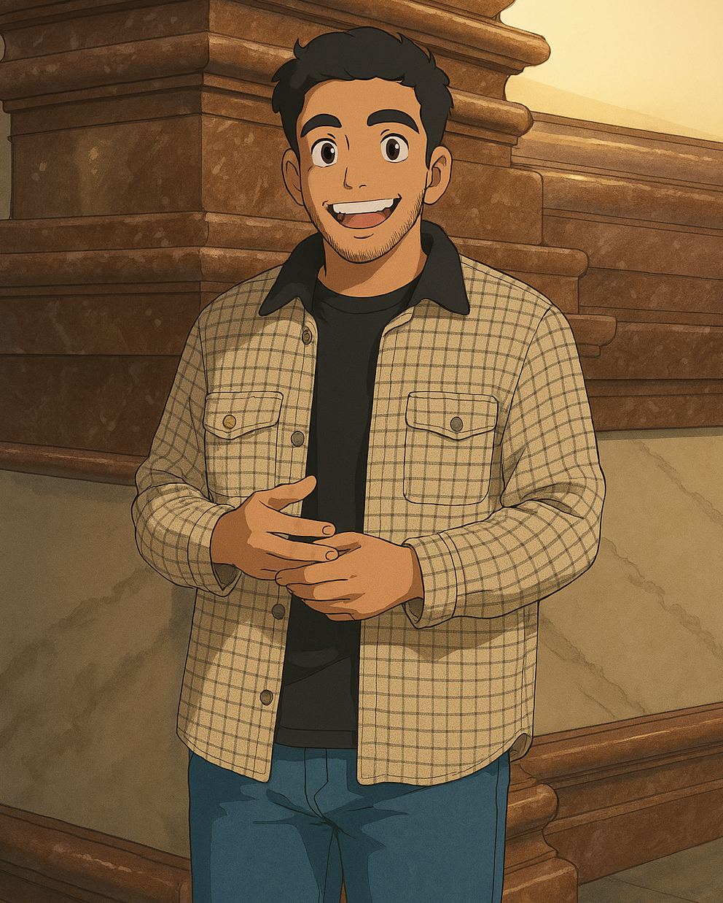

Smile is a student-built marketplace app made just for the UM community. It helps students, faculty, and staff buy, sell, trade, or give away textbooks, electronics, course materials, and more—safely and easily. Smile strengthens campus connections promoting affordability and sustainability with verified users, ratings, free and lost-and-found section.
Smile
About the App
A. Vision Statement
Smile is an online marketplace app designed exclusively for the University of Manitoba community. It provides a safe, supportive space where students, faculty, and staff can buy, sell, and trade items like textbooks, course materials, and other university essentials. Smile simplifies campus life while fostering a stronger sense of belonging and collaboration by connecting people who need items with those who have them.
This app is valuable because it addresses a common challenge faced by many in university communities: finding affordable and reliable resources. Users can list or search for things such as textbooks, notes, electronics and other essentials, making it a convenient, cost-effective solution for everyone. Additionally, Smile helps the community by encouraging the reuse of goods, reducing waste, and supporting choices that are better for the environment . The app has a user-friendly design, with simple user tools to list, and lookup for items, with clear categories to help users quickly find what they need.
Building trust and safety is a key focus of Smile. Features like user ratings and direct communication help create an honest and transparent marketplace. University verification ensures all users belong to the academic community. This verification process gives users peace of mind when interacting with others, knowing they are engaging with verified members of the campus.
Beyond its primary purpose of buying and selling, Smile offers valuable features that set it apart. A dedicated section for free items allows students to give away things they no longer need to support others and promote a culture of generosity. The app also includes a lost-and-found section to help users locate misplaced belongings. Whether it's a lost wallet, ID card, or other personal item, Smile makes it easier to reconnect with important possessions, reducing stress and fostering goodwill among users. Smile also contributes to a greener, more resource-efficient campus by encouraging the exchange of items instead of discarding them. It reduces the demand for new purchases and promotes a more sustainable approach.
The success of Smile will be measured by the active participation of 50% of active users of the University of Manitoba’s active community to use the platform once a week whether buying, selling, sharing free items, or using the lost-and-found section. User trust and safety will be evident as users feel confident and secure during exchanges which is supported by features designed to promote safe interactions. The platform will demonstrate a positive environmental impact through a reduction in waste, as more items are reused instead of discarded. Finally, the app’s ease of use will lead to high levels of user satisfaction, with many users recommending it to their peers.
At its core, Smile is about more than just exchanging goods—it’s about building meaningful connections and creating a more affordable, sustainable, and supportive campus. By meeting the unique needs of university communities, Smile will become an essential part of campus life to help individuals while strengthening the sense of community as a whole :)
B. Intended Users
The Smile platform is intended exclusively for members of the
University of Manitoba community
. Access to the platform is strictly limited to:
- Students — including Undergraduate, Graduate, International, and Exchange students.
- Faculty — such as Professors, Lecturers, and Research Supervisors.
- Staff — including Administrative, Maintenance, and Support personnel.
Only users with official university emails ending with @myumanitoba.ca or @umanitoba.ca are eligible to register. This restriction ensures that Smile remains a closed, trusted, and safe network, serving only those who are genuinely part of the University of Manitoba community.
C. Major Functionalities
Smile offers essential features designed to provide a seamless and meaningful experience for the University of Manitoba community. The following key functionalities were implemented to meet the platform's goals:
- User Registration and Login: Only users with valid @myumanitoba.ca or @umanitoba.ca email addresses can register and log in, ensuring that only verified university members have access to the platform.
- Item Listing: Users can create detailed item listings by providing information such as the item name, description, price, and other relevant details.
- Item Showcase: All listed items are displayed in an organized manner, highlighting essential information like price, description, and other attributes, making it easier for users to browse available items.
- Search and Filter: Users can search for specific items using keywords and apply filters based on categories or other attributes, helping them efficiently find what they are looking for.
- Bookmark Items: Users can bookmark (save) items they are interested in. Bookmarked items are accessible anytime through a dedicated section, making it easy to manage items of interest.
- Lost and Found Section: Users can post information about lost or found items, helping community members recover misplaced belongings such as ID cards, wallets, and personal items.
- Free Items Section: A dedicated space where users can give away items for free, promoting generosity and assisting those who may need essential resources at no cost.
D. Video Showcase
Watch this video to learn more about how Smile can help make campus life easier!
Our Story
Smile started as our COMP 3350 group project. We wanted to make something that could actually help students and other people at university like us. We noticed how hard it was to find used textbooks, sell things, or even recover lost stuff on campus. So, we thought why not build an app that makes all of that easier? That’s how Smile was born. It’s a simple idea to solve everyday problems and bring the university community a little closer together.
A. Overall Architecture
The architecture of Smile was broadly similar to the demo system, following a layered structure. However, we did not strictly enforce separation of concerns. While our intention was to clearly separate the UI, logic, and data layers, some components ended up violating this structure. In particular, certain logic classes became coupled with Android-specific components. This design decision led to challenges during iteration 3, as it made the system harder to refactor and maintain.
B. What Went Right?
The development process went smoothly during the initial iterations:
- We successfully implemented the login system with university email verification.
- Core functionalities like item listing, bookmarking, filtering, and free and lost & found were built organically without major blockers.
- The team collaborated well, leading to the development of an intuitive user interface.
- Team communication and task coordination were effective, especially during the early phases.
- Internal testing confirmed that most features performed as expected and aligned with user needs.
C. What Went Wrong?
A key issue we encountered was the accumulation of technical debt, primarily due to the lack of architectural focus in the early stages. We identified in our iteration 2 retrospective that:
- The project suffered from high coupling and did not fully comply with SOLID principles.
- Much of iteration 3 was consumed by refactoring and restructuring, instead of focusing on extending features.
- Time constraints limited our ability to restore the previously working model fully.
- The planned FAQ section remained incomplete due to the lack of time and resources.
D. Lessons Learned & Future Improvements
Throughout this project, we learned several important lessons:
- Prioritize architectural quality early to minimize technical debt
- Allocate time and resources regularly to address technical debt during each iteration instead of deferring it
- Conduct regular design reviews and incorporate feedback earlier
- Balance between feature development and maintaining a clean and sustainable codebase
If we were to start over, we would:
- Follow SOLID principles more strictly.
- Conduct more frequent retrospectives focused on both functionality and design.
- Handle technical debt early to avoid it becoming a major issue later.
E. Conclusion
Despite the challenges, Smile provided us with a valuable learning experience. We successfully built most of the essential features and experienced real-world challenges related to development, architecture, and time management. In future projects, we will aim to balance feature development with maintainable design and allocate explicit time to resolve technical debt throughout the development process.
Contributors & Gained Skills
We are group Syndicate06 in COMP 3350 A01 Winter 2025. Our project was a collaborative effort where each member contributed to different aspects of Smile while gaining valuable skills throughout the process:
Made significant contributions to developing the item listing and item showcase functionalities, including integrating database connections and handling core item-related operations.
Learned database integration, item listing functionality, and how to structure & implement core features following development best practices.

Completed the implementation of the login functionality ensuring that only university-verified users can register and access the platform.
Learned authentication, input validation, and secure integration of the login system with the backend.
Contributed to both the login system and took the lead in designing the user interface, ensuring the app is user-friendly and visually consistent. Also implemented unique category icons for items and played a significant role in restructuring and cleaning up the codebase to align with SOLID principles.
Gained skills in Android UI design, layout structuring, improving user experience (UX), and applying SOLID principles for maintainable code.
Responsible for conducting extensive testing (unit, system, and usability) to ensure the application's stability and correctness.
Developed proficiency in test-driven development (TDD), systematic testing, and ensuring high-quality assurance standards throughout the project.
Contributed to creating fake/test users and ensured compatibility with the HSQL database for user-related operations. Also participated in project management activities and task organization.
Gained exposure to HSQL database integration, test data generation, and a better understanding of project management and standard development processes.
Acknowledgment
We would like to acknowledge that the layout, styling, and several structural elements of this website are adapted directly from the official umanitoba.ca website. We are grateful for the design inspiration and clarity that the original source provided in building our own project site for Smile.
Additionally, the logo and featured image of the Smile app were generated with the assistance of ChatGPT's image tools . These AI-generated assets helped us quickly visualize and brand our platform.
This website project was created for academic purposes as part of the COMP 3350 course at the University of Manitoba. The webpage is not the part of the actual official umanitoba.ca website.